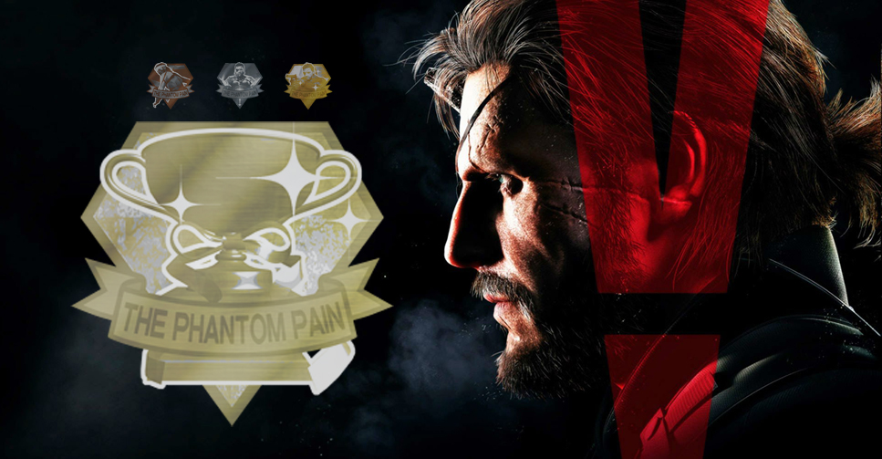

Um pouco sobre mim - Allan Barros do Nascimento
Aqui eu conto um pouco sobre mim, sobre minha experiencia e como conheci Metal Gear.
Eu me chamo Allan Barros, tenho 20 anos. Moro em Fortaleza-CE. Atualmente trabalho de segunda a sexta e curso Infomática para internet dias de segunda e quarta, no campus do IFCE-Maranguape.
Minha relação com Metal Gear começou no fim da franquia. Sim, no ultimo jogo: Metal Gear Solid V: Phantom Pain. Eu comecei a jogar esse jogo quando eu tinha por volta de 17 anos. Eu já tinha ouvido falar um pouco sobre Metal Gear, já tinha visto algumas gameplays dos clássicos, mas nunca tinha jogado na minha vida. Para ser sincero, até então, eu não gostava muito de jogos "Stealth". Metal Gear abriu meus olhos para esse tipo de jogo. Um belo dia, eu estava jogando no meu xbox 360 e decidi abrir esse jogo. Alguns minutos de gameplay e vi que realmente não era pra mim. Stealth é a principal mecânica desse jogo e eu não estava acostumado com isso. No entanto, não desisti de primeira, conclui as primeiras missões do jogo e fui me familiarizando. Quando percebi, estava completamente imerso no jogo.
A franquia em si trata muito sobre temas políticos, conspirações, filosofia e coisas do tipo, que é algo que chama muito minha atenção até em outras mídias, como musica (sou amante de punk rock), livros e filmes. Isso me saltou aos olhos e me prendeu. Além disso, o gameplay completamente bem feito e mecânicas super detalhadas me prenderam na hora. Joguei por horas e horas a fio. Logo, joguei por dias e dias. Infelizmente, por uma questão de limitação do meu videogame na época, não consegui finaliza-lo. Mas, esse fato não fez com que eu abandonasse a minha curiosidade pela franquia.
Passei um tempo lendo e vendo videos sobre o jogo, sobre a franquia. Curiosidades, easter eggs, tudo que podia. Finalmente, esse ano, 2023, aos meus 21 anos, um amigo me emprestou o game para jogar no PC e eu lembro de rejogar e sentir a mesma coisa de anos atrás. Dessa vez, joguei até o fim. Ao finalizar, me senti realizado. Como se eu tivesse passado de uma fase no mundo real. Naquele momento, tive a certeza de que Metal Gear Solid V: Phantom Pain é um dos melhores jogos que já joguei na minha vida.
